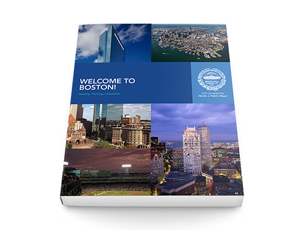
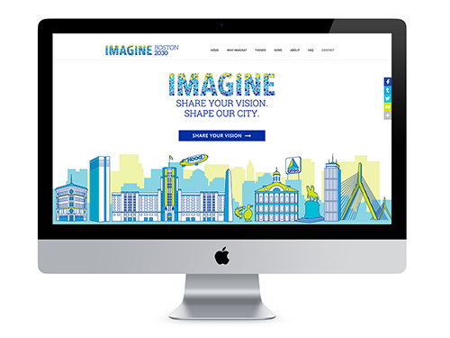

Hi, I'm Gwen Kidera!
I'm a freelance designer and photographer based in Boston, MA. I first became interested in photography while studying in South Africa in college. I realized that I was unable to fully capture my experiences in words, so I turned to my camera and haven't looked back since!
I studied design and photography at the School of Museum of Fine Arts, Massachusetts College of Art and Design, and New England School of Photography. Most recently, I completed a course at General Assembly in Front-End Web Development where I built this site!
Services
My first love is travel and documentary photography. I also shoot events, weddings, engagements, and portraits! I tend to shoot in natural lighting and relaxed settings. I like to capture smaller, special moments between the posed ones.
Graphic design services include logos, icons, brochures, posters, illustrations, advertisements, annual reports, and more! You name it and I've probably worked on it at some point.
I primarily focus on front-end web development and have a working knowledge of HTML, CSS, and JavaScript. I have built several WordPress sites and work with the client throughout the process to make sure the site fits their needs. After launch, I train clients to make content edits themselves so they can manage updates going forward.
Featured Work
I put together a set of five booklets for GE's top executives to learn about the benefits of moving their headquarters to Boston. The booklets were featured on Boston.com, the Boston Globe, and Boston Business Journal.
General Electric Pitch Book
Website, logo, and print collateral for Imagine Boston 2030, Boston's first citywide planning study in 50 years.
Imagine Boston 2030
A set of hand drawn film camera illustrations for a fictional photography magazine, Deadpan.
Film Camera Illustrations
Experience
Digital Designer
DuVine Cycling + Adventure Co.
2016 - Present
Senior Graphic Designer & Staff Photographer
Boston Redevelopment Authority
2013 - Present
Graphic Design & Photography Courses
Massachusetts College of Art & Design
2013 - 2015
Freelance Designer & Photographer
Gwen Kidera Design & Photographer
2012 - Present
BA in International Affairs & Environmental Studies
Northeastern University
2007 - 2012
2015 - 2016
2013 - 2014
2011 - 2012
2009 - 2010
2007 - 2008
Front End Web Development
General Assembly
Spring 2016
Graphic Designer
City of Boston
2014 - 2016
Art & Design Intern
Boston Magazine
Spring 2014
Project Associate
Small-Scale Sustainable Infrastructure Development Fund (S3IDF)
Spring - Summer 2013
Testimonials
Chloe & Alex
We had the pleasure of working with Gwen in fall 2015 when she took our engagement photos. From the very start of the project, she was professional, enthusiastic and fun. She had wonderful ideas about unique places to take the photos, and great poses to work with. During the shoot, Gwen had an impeccable eye for lighting and backdrop. We’re extremely pleased with the outcome and will cherish these photos forever.
Alex & Juliana
Hiring Gwen was one of the best decisions I made for my wedding day. The whole day went by in such a happy blur and I’ll be able to relive those special moments she captured for the rest of my life. She made tactful and gentle suggestions to make shots better and had an eye for the little details. I am so grateful for the candid photos she snapped in between the posed shots. Thank you, Gwen!
Liz & Alex
We contracted Gwen to take our engagement photos. She was extremely professional throughout the shoot and was willing to have fun with us, suggesting creative ideas. Her suggestion to include pictures on Acorn Street in Boston resulted in some unexpected and striking shots. We are very happy with our pictures and had a great time with her.
Chris
I contracted Gwen Kidera to take a series of family photographs. I knew it was going to be a challenge with thirteen people, including five children, two under the age of two. Gwen was very professional and great with the kids. She photographed as many different groupings as we wanted and was very accommodating as we came up with different ideas. The photos turned out great and everyone was pleased. I would recommend her highly.
Jennifer
Gwen photographed my wedding with the assistance of a second shooter. Her energy and enthusiasm as well as her commitment to getting that great shot were so very appreciated. She was flexible and accommodating to our unique requests including adding our beloved dog into photos and location and wardrobe changes. Gwen has a great eye for that special moment and our photographs are beautiful. She was very efficient at getting our photographs to us and I would highly recommend her to anyone!
Tracy
Gwen covered a recent birthday party, documenting the night in pictures. She was extremely professional through the entire process, as well as friendly and easy to work with. We were extremely happy with the results and I would highly recommend her work.